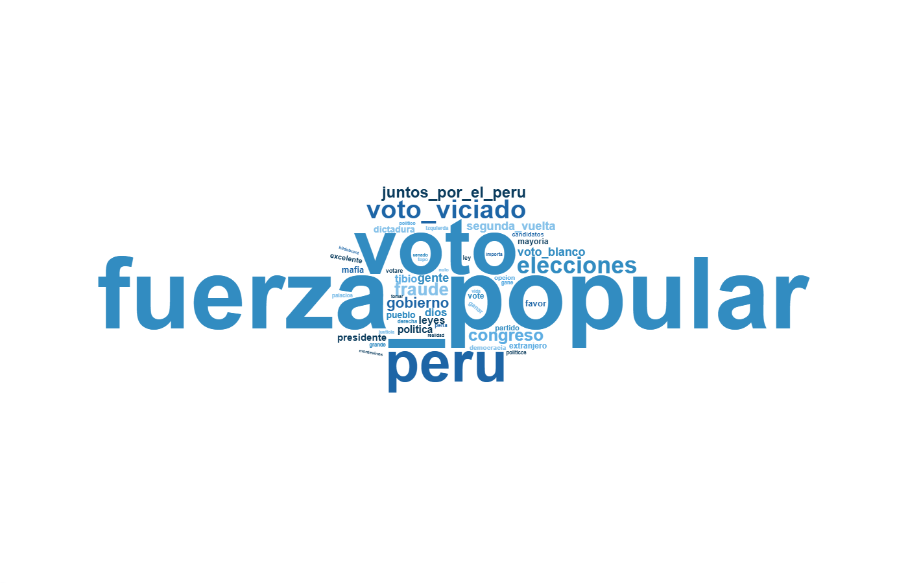

rm(list = ls())
graphics.off()
options(scipen = 999)
options(digits = 3)
if (!require("pacman")) install.packages("pacman")
library(pacman)
p_load(
tidyverse,
tidytext,
readxl,
stringi,
wordcloud2,
htmlwidgets,
webshot2,
rstudioapi
)Aplicación de Text Mining en comentarios de YouTube
Proyecto: Posible desinformación política en YouTube
Aplicación de Text Mining en comentarios de YouTube
El presente documento aplica técnicas de Text Mining sobre comentarios públicos extraídos de YouTube. El análisis permite identificar términos frecuentes, referencias partidarias y categorías asociadas al panorama electoral dentro de la conversación digital.
1. Preparación del entorno
1.1 Limpieza del entorno y carga de paquetes
1.2 Establecimiento del directorio de trabajo
if (rstudioapi::isAvailable()) {
ruta_script <- tryCatch(
dirname(rstudioapi::getActiveDocumentContext()$path),
error = function(e) NA
)
if (!is.na(ruta_script) && ruta_script != "." && ruta_script != "") {
setwd(ruta_script)
}
}
getwd()[1] "C:/Users/rcard/OneDrive/Desktop"1.3 Configuración de Microsoft Edge para webshot2
rutas_edge <- c(
"C:/Program Files (x86)/Microsoft/Edge/Application/msedge.exe",
"C:/Program Files/Microsoft/Edge/Application/msedge.exe"
)
ruta_edge <- rutas_edge[file.exists(rutas_edge)][1]
if (!is.na(ruta_edge)) {
Sys.setenv(CHROMOTE_CHROME = ruta_edge)
}2. Lectura y selección de datos
2.1 Lectura del archivo CSV
comentarios_raw <- read_csv(
"comentarios_youtube_raw.csv",
show_col_types = FALSE
)
names(comentarios_raw) [1] "video_id" "url_video" "titulo_video"
[4] "canal" "fecha_video" "vistas_video"
[7] "likes_video" "comentario_id" "autor_anonimo"
[10] "texto_comentario" "likes_comentario" "fecha_comentario"
[13] "total_respuestas" "fuente" "metodo_extraccion"
[16] "fecha_extraccion" 2.2 Selección de la columna de comentarios
comentarios_texto <- comentarios_raw %>%
select(texto_comentario) %>%
filter(!is.na(texto_comentario)) %>%
mutate(
id_comentario = row_number(),
texto_comentario = str_squish(texto_comentario)
)
head(comentarios_texto)# A tibble: 6 × 2
texto_comentario id_comentario
<chr> <int>
1 "Ese es el Problema de la Dictadura,criminal" 1
2 "Siga asi don Cesar...este canal tambien debe ser desde ahora p… 2
3 "Un pueblo que elige a corruptos,, inmorales, ladrones y traido… 3
4 "Gracias don César Hildebrant por tan excelentísimo programa!! … 4
5 "Ni ell gobernador de Huancavelica se pronunció ni hizo sentir … 5
6 "Bravo César!!!! No nos vamos a callar!!!!!!!!\U0001f44d\U0001f… 63. Limpieza textual inicial
3.1 Normalización previa del texto
comentarios_texto <- comentarios_texto %>%
mutate(
texto_limpio = texto_comentario,
texto_limpio = str_to_lower(texto_limpio),
texto_limpio = stri_trans_general(texto_limpio, "Latin-ASCII"),
texto_limpio = str_replace_all(texto_limpio, "http\\S+|www\\S+", " "),
texto_limpio = str_replace_all(
texto_limpio,
"\\bvoto\\s+viciado\\b|\\bvotos\\s+viciados\\b",
"voto_viciado"
),
texto_limpio = str_replace_all(
texto_limpio,
"\\bvoto\\s+en\\s+blanco\\b|\\bvoto\\s+blanco\\b|\\bvotos\\s+blancos\\b",
"voto_blanco"
),
texto_limpio = str_replace_all(
texto_limpio,
"\\bsegunda\\s+vuelta\\b|\\b2da\\s+vuelta\\b",
"segunda_vuelta"
),
texto_limpio = str_replace_all(
texto_limpio,
"\\bfuerza\\s+popular\\b",
"fuerza_popular"
),
texto_limpio = str_replace_all(
texto_limpio,
"\\bjuntos\\s+por\\s+el\\s+peru\\b",
"juntos_por_el_peru"
),
texto_limpio = str_replace_all(texto_limpio, "[^a-z_\\s]", " "),
texto_limpio = str_squish(texto_limpio)
)
head(comentarios_texto)# A tibble: 6 × 3
texto_comentario id_comentario texto_limpio
<chr> <int> <chr>
1 "Ese es el Problema de la Dictadura,criminal" 1 ese es el p…
2 "Siga asi don Cesar...este canal tambien debe ser … 2 siga asi do…
3 "Un pueblo que elige a corruptos,, inmorales, ladr… 3 un pueblo q…
4 "Gracias don César Hildebrant por tan excelentísim… 4 gracias don…
5 "Ni ell gobernador de Huancavelica se pronunció ni… 5 ni ell gobe…
6 "Bravo César!!!! No nos vamos a callar!!!!!!!!\U00… 6 bravo cesar…3.2 Tokenización
tokens_comentarios <- comentarios_texto %>%
select(id_comentario, texto_limpio) %>%
unnest_tokens(
output = palabra,
input = texto_limpio,
token = "regex",
pattern = "\\s+"
)
head(tokens_comentarios, 20)# A tibble: 20 × 2
id_comentario palabra
<int> <chr>
1 1 ese
2 1 es
3 1 el
4 1 problema
5 1 de
6 1 la
7 1 dictadura
8 1 criminal
9 2 siga
10 2 asi
11 2 don
12 2 cesar
13 2 este
14 2 canal
15 2 tambien
16 2 debe
17 2 ser
18 2 desde
19 2 ahora
20 2 parte 4. Eliminación de stopwords
4.1 Lectura de stopwords personalizadas
stopwords_custom <- read_excel("CustomStopWords.xlsx")
stopwords_custom <- stopwords_custom %>%
rename(palabra = 1) %>%
mutate(
palabra = str_to_lower(palabra),
palabra = str_squish(palabra),
palabra = stri_trans_general(palabra, "Latin-ASCII")
) %>%
filter(!is.na(palabra), palabra != "") %>%
distinct(palabra)
head(stopwords_custom)# A tibble: 6 × 1
palabra
<chr>
1 actualmente
2 adelante
3 ademas
4 afirmo
5 agrego
6 ahi 4.2 Limpieza 1: stopwords personalizadas
tokens_filtrados <- tokens_comentarios %>%
mutate(
palabra = str_to_lower(palabra),
palabra = str_squish(palabra),
palabra = stri_trans_general(palabra, "Latin-ASCII")
) %>%
anti_join(stopwords_custom, by = "palabra") %>%
filter(
!is.na(palabra),
palabra != "",
str_detect(palabra, "^[a-z_]+$")
)
resumen_limpieza1 <- tibble(
tokens_iniciales = nrow(tokens_comentarios),
tokens_despues_stopwords = nrow(tokens_filtrados),
tokens_eliminados = nrow(tokens_comentarios) - nrow(tokens_filtrados)
)
resumen_limpieza1# A tibble: 1 × 3
tokens_iniciales tokens_despues_stopwords tokens_eliminados
<int> <int> <int>
1 31186 12884 183024.3 Stopwords contextuales
stopwords_contextuales <- c(
"castillo",
"dina",
"boluarte",
"vizcarra",
"sagasti",
"alan",
"garcia",
"toledo",
"ollanta",
"humala",
"acuna",
"lopez",
"aliaga",
"sanchez",
"nieto",
"curwen",
"hildebrandt",
"marisol",
"cesar",
"rosa",
"tello",
"chau",
"rmp",
"jorge",
"maria",
"roberto",
"perez",
"lima",
"sr",
"sra",
"senor",
"senora",
"gracias",
"ud",
"don",
"jaja",
"jajaja",
"xd",
"xq",
"q",
"k",
"kk",
"anos",
"entrevista",
"tio",
"persona",
"seguir",
"canal",
"programa"
)
stopwords_contextuales <- tibble(
palabra = stopwords_contextuales
) %>%
mutate(
palabra = str_to_lower(palabra),
palabra = str_squish(palabra),
palabra = stri_trans_general(palabra, "Latin-ASCII")
) %>%
distinct(palabra)5. Normalización semántica
5.1 Diccionario de equivalencias políticas
diccionario_equivalencias <- tibble(
palabra = c(
"keiko",
"fujimori",
"fujimorismo",
"fujimorista",
"fujimoristas",
"fp",
"fuerza",
"popular",
"fuerza_popular",
"jp",
"juntos",
"juntos_por_el_peru",
"peru",
"peruanos",
"peruanas",
"peruano",
"peruana",
"voto",
"votos",
"votar",
"viciado",
"viciados",
"voto_viciado",
"blanco",
"blancos",
"voto_blanco",
"vuelta",
"segunda_vuelta",
"eleccion",
"elecciones",
"electoral",
"electorales",
"fraude",
"fraudes",
"fraudulento",
"fraudulenta"
),
termino = c(
rep("fuerza_popular", 9),
rep("juntos_por_el_peru", 3),
rep("peru", 5),
rep("voto", 3),
rep("voto_viciado", 3),
rep("voto_blanco", 3),
rep("segunda_vuelta", 2),
rep("elecciones", 4),
rep("fraude", 4)
),
categoria = c(
rep("partido_politico", 9),
rep("partido_politico", 3),
rep("pais_poblacion", 5),
rep("tema_electoral", 3),
rep("tema_electoral", 3),
rep("tema_electoral", 3),
rep("tema_electoral", 2),
rep("tema_electoral", 4),
rep("riesgo_desinformacion", 4)
)
) %>%
mutate(
palabra = str_to_lower(palabra),
palabra = str_squish(palabra),
palabra = stri_trans_general(palabra, "Latin-ASCII")
)5.2 Limpieza final y normalización de términos
tokens_final <- tokens_filtrados %>%
anti_join(stopwords_contextuales, by = "palabra") %>%
left_join(diccionario_equivalencias, by = "palabra") %>%
mutate(
palabra_final = if_else(is.na(termino), palabra, termino),
categoria = if_else(is.na(categoria), "termino_general", categoria)
) %>%
select(
id_comentario,
palabra_original = palabra,
palabra_final,
categoria
)
resumen_limpieza2 <- tibble(
tokens_despues_stopwords = nrow(tokens_filtrados),
tokens_finales = nrow(tokens_final),
tokens_eliminados_limpieza_contextual = nrow(tokens_filtrados) - nrow(tokens_final)
)
resumen_limpieza2# A tibble: 1 × 3
tokens_despues_stopwords tokens_finales tokens_eliminados_limpieza_contextual
<int> <int> <int>
1 12884 11412 1472head(tokens_final, 20)# A tibble: 20 × 4
id_comentario palabra_original palabra_final categoria
<int> <chr> <chr> <chr>
1 1 problema problema termino_general
2 1 dictadura dictadura termino_general
3 1 criminal criminal termino_general
4 2 siga siga termino_general
5 2 resistencia resistencia termino_general
6 3 pueblo pueblo termino_general
7 3 elige elige termino_general
8 3 corruptos corruptos termino_general
9 3 inmorales inmorales termino_general
10 3 ladrones ladrones termino_general
11 3 traidores traidores termino_general
12 3 victimas victimas termino_general
13 3 complices complices termino_general
14 3 george george termino_general
15 3 owell owell termino_general
16 4 hildebrant hildebrant termino_general
17 4 excelentisimo excelentisimo termino_general
18 4 salud salud termino_general
19 4 larga larga termino_general
20 4 vida vida termino_general6. Análisis de frecuencia
6.1 Frecuencia general
frecuencia_general <- tokens_final %>%
count(palabra_final, sort = TRUE)
head(frecuencia_general, 20)# A tibble: 20 × 2
palabra_final n
<chr> <int>
1 fuerza_popular 345
2 voto 271
3 peru 197
4 voto_viciado 91
5 elecciones 82
6 fraude 62
7 congreso 58
8 juntos_por_el_peru 54
9 gobierno 51
10 gente 41
11 segunda_vuelta 41
12 voto_blanco 40
13 dios 38
14 leyes 37
15 tibio 37
16 politica 35
17 presidente 34
18 dictadura 32
19 pueblo 31
20 favor 306.2 Top 10 términos más frecuentes
top_10_palabras <- tokens_final %>%
count(palabra_final, sort = TRUE) %>%
slice_max(n, n = 10, with_ties = FALSE)
top_10_palabras# A tibble: 10 × 2
palabra_final n
<chr> <int>
1 fuerza_popular 345
2 voto 271
3 peru 197
4 voto_viciado 91
5 elecciones 82
6 fraude 62
7 congreso 58
8 juntos_por_el_peru 54
9 gobierno 51
10 gente 416.3 Gráfico del top 10 de términos
grafico_top10 <- ggplot(
top_10_palabras,
aes(x = reorder(palabra_final, n), y = n, fill = palabra_final)
) +
geom_col(width = 0.75) +
coord_flip(clip = "off") +
geom_text(
aes(label = n),
hjust = -0.2,
colour = "black",
size = 3.5
) +
labs(
title = "Top 10 términos más frecuentes en comentarios de YouTube",
subtitle = "Términos agrupados mediante normalización semántica",
x = "Término",
y = "Frecuencia"
) +
scale_y_continuous(
limits = c(0, max(top_10_palabras$n) + 10),
expand = c(0, 0)
) +
theme_bw() +
theme(
legend.position = "none",
plot.title = element_text(size = 15, face = "bold", hjust = 0.5),
plot.subtitle = element_text(size = 10, hjust = 0.5),
axis.title.x = element_text(size = 10),
axis.title.y = element_text(size = 10),
axis.text.x = element_text(color = "gray25", size = 8),
axis.text.y = element_text(color = "blue4", size = 9, face = "bold"),
axis.ticks = element_line(color = "lightblue"),
panel.background = element_rect(fill = "khaki1", color = NA),
plot.background = element_rect(fill = "white", color = NA),
panel.grid.major.y = element_blank(),
panel.grid.minor = element_blank(),
plot.margin = margin(10, 30, 10, 10)
)
grafico_top10
7. Análisis por categorías
7.1 Frecuencia por categoría
frecuencia_categorias <- tokens_final %>%
count(categoria, sort = TRUE)
frecuencia_categorias# A tibble: 5 × 2
categoria n
<chr> <int>
1 termino_general 10229
2 tema_electoral 525
3 partido_politico 399
4 pais_poblacion 197
5 riesgo_desinformacion 627.2 Referencias partidarias
frecuencia_partidos <- tokens_final %>%
filter(categoria == "partido_politico") %>%
count(palabra_final, sort = TRUE)
frecuencia_partidos# A tibble: 2 × 2
palabra_final n
<chr> <int>
1 fuerza_popular 345
2 juntos_por_el_peru 547.3 Gráfico de referencias partidarias
if (nrow(frecuencia_partidos) > 0)
grafico_partidos <- ggplot(
frecuencia_partidos,
aes(x = reorder(palabra_final, n), y = n, fill = palabra_final)
) +
geom_col(width = 0.75) +
coord_flip(clip = "off") +
geom_text(
aes(label = n),
hjust = -0.2,
colour = "black",
size = 3.5
) +
labs(
title = "Referencias partidarias en comentarios de YouTube",
subtitle = "Términos agrupados por partido político",
x = "Partido político",
y = "Frecuencia"
) +
scale_y_continuous(
limits = c(0, max(frecuencia_partidos$n) + 10),
expand = c(0, 0)
) +
theme_bw() +
theme(
legend.position = "none",
plot.title = element_text(size = 15, face = "bold", hjust = 0.5),
plot.subtitle = element_text(size = 10, hjust = 0.5),
axis.text.y = element_text(color = "blue4", size = 9, face = "bold"),
panel.background = element_rect(fill = "khaki1", color = NA),
panel.grid.major.y = element_blank(),
panel.grid.minor = element_blank(),
plot.margin = margin(10, 30, 10, 10)
)
grafico_partidos
8. Nube de palabras
# A tibble: 50 × 2
palabra_final n
<chr> <int>
1 fuerza_popular 345
2 voto 271
3 peru 197
4 voto_viciado 91
5 elecciones 82
6 fraude 62
7 congreso 58
8 juntos_por_el_peru 54
9 gobierno 51
10 gente 41
# ℹ 40 more rows
9. Análisis de sentimientos
En esta sección se utiliza el diccionario sentimientos_2.txt, el cual contiene las columnas palabra y sentimiento. El análisis identifica los cinco sentimientos más frecuentes en los comentarios de YouTube, ordenados de forma decreciente según su frecuencia.
9.1 Lectura del diccionario de sentimientos
diccionario_sentimientos <- read_delim(
"sentimientos_2.txt",
delim = "\t",
show_col_types = FALSE
)
diccionario_sentimientos <- diccionario_sentimientos %>%
mutate(
palabra = str_to_lower(palabra),
palabra = str_squish(palabra),
palabra = stri_trans_general(palabra, "Latin-ASCII"),
sentimiento = str_to_lower(sentimiento),
sentimiento = str_squish(sentimiento),
sentimiento = stri_trans_general(sentimiento, "Latin-ASCII")
) %>%
filter(
!is.na(palabra),
palabra != "",
!is.na(sentimiento),
sentimiento != ""
) %>%
distinct(palabra, sentimiento)
diccionario_sentimientos# A tibble: 12,393 × 2
palabra sentimiento
<chr> <chr>
1 abaco confianza
2 abad confianza
3 abanderar negativo
4 abandonado ira
5 abandonado miedo
6 abandonado negativo
7 abandonado tristeza
8 abandonar miedo
9 abandonar negativo
10 abandonar tristeza
# ℹ 12,383 more rows9.2 Cruce entre tokens y diccionario de sentimientos
tokens_sentimientos <- tokens_final %>%
left_join(
diccionario_sentimientos %>%
rename(sentimiento_original = sentimiento),
by = c("palabra_original" = "palabra")
) %>%
left_join(
diccionario_sentimientos %>%
rename(sentimiento_final = sentimiento),
by = c("palabra_final" = "palabra")
) %>%
mutate(
sentimiento = coalesce(sentimiento_original, sentimiento_final),
palabra_detectada = if_else(
!is.na(sentimiento_original),
palabra_original,
palabra_final
)
) %>%
filter(!is.na(sentimiento)) %>%
select(
id_comentario,
palabra_original,
palabra_final,
palabra_detectada,
sentimiento
) %>%
distinct(
id_comentario,
palabra_detectada,
sentimiento,
.keep_all = TRUE
)
tokens_sentimientos# A tibble: 8,223 × 5
id_comentario palabra_original palabra_final palabra_detectada sentimiento
<int> <chr> <chr> <chr> <chr>
1 1 problema problema problema miedo
2 1 problema problema problema negativo
3 1 problema problema problema tristeza
4 1 dictadura dictadura dictadura disgusto
5 1 dictadura dictadura dictadura ira
6 1 dictadura dictadura dictadura miedo
7 1 dictadura dictadura dictadura negativo
8 1 dictadura dictadura dictadura premonicion
9 1 dictadura dictadura dictadura tristeza
10 1 criminal criminal criminal disgusto
# ℹ 8,213 more rows9.3 Frecuencia general de sentimientos
frecuencia_sentimientos <- tokens_sentimientos %>%
count(sentimiento, sort = TRUE) %>%
mutate(
porcentaje = round(100 * n / sum(n), 1)
)
frecuencia_sentimientos# A tibble: 10 × 3
sentimiento n porcentaje
<chr> <int> <dbl>
1 negativo 1415 17.2
2 positivo 1406 17.1
3 confianza 1047 12.7
4 ira 810 9.9
5 miedo 716 8.7
6 tristeza 702 8.5
7 premonicion 617 7.5
8 alegria 572 7
9 disgusto 492 6
10 asombro 446 5.49.4 Cinco sentimientos más frecuentes
top_5_sentimientos <- frecuencia_sentimientos %>%
slice_max(n, n = 5, with_ties = FALSE) %>%
arrange(desc(n))
top_5_sentimientos# A tibble: 5 × 3
sentimiento n porcentaje
<chr> <int> <dbl>
1 negativo 1415 17.2
2 positivo 1406 17.1
3 confianza 1047 12.7
4 ira 810 9.9
5 miedo 716 8.79.5 Gráfico de los cinco sentimientos más frecuentes
grafico_top5_sentimientos <- ggplot(
top_5_sentimientos,
aes(x = reorder(sentimiento, porcentaje), y = porcentaje, fill = sentimiento)
) +
geom_col(width = 0.75) +
coord_flip(clip = "off") +
geom_text(
aes(label = paste0(porcentaje, "%")),
hjust = -0.1,
colour = "black",
size = 3.5
) +
labs(
title = "Top 5 sentimientos más frecuentes en comentarios de YouTube",
subtitle = "Distribución porcentual según el diccionario sentimientos_2.txt",
x = "Sentimiento",
y = "Porcentaje"
) +
scale_y_continuous(
limits = c(0, max(top_5_sentimientos$porcentaje) + 5),
expand = c(0, 0),
labels = function(x) paste0(x, "%")
) +
theme_bw() +
theme(
legend.position = "none",
plot.title = element_text(
size = 15,
face = "bold",
hjust = 0.5
),
plot.subtitle = element_text(
size = 10,
hjust = 0.5
),
axis.title.x = element_text(size = 10),
axis.title.y = element_text(size = 10),
axis.text.x = element_text(
color = "gray25",
size = 8
),
axis.text.y = element_text(
color = "blue4",
size = 9,
face = "bold"
),
axis.ticks = element_line(color = "lightblue"),
panel.background = element_rect(
fill = "khaki1",
color = NA
),
plot.background = element_rect(
fill = "white",
color = NA
),
panel.grid.major.y = element_blank(),
panel.grid.minor = element_blank(),
plot.margin = margin(10, 35, 10, 10)
)
grafico_top5_sentimientos
9.6 Palabras asociadas a los cinco sentimientos más frecuentes
palabras_top5_sentimientos <- tokens_sentimientos %>%
semi_join(
top_5_sentimientos,
by = "sentimiento"
) %>%
count(sentimiento, palabra_detectada, sort = TRUE) %>%
group_by(sentimiento) %>%
slice_max(n, n = 10, with_ties = FALSE) %>%
ungroup()
palabras_top5_sentimientos# A tibble: 50 × 3
sentimiento palabra_detectada n
<chr> <chr> <int>
1 confianza voto 202
2 confianza congreso 47
3 confianza dios 37
4 confianza politica 34
5 confianza presidente 30
6 confianza mayoria 26
7 confianza blanco 24
8 confianza excelente 24
9 confianza ley 19
10 confianza grande 17
# ℹ 40 more rows9.7 Gráfico de palabras asociadas por sentimiento
grafico_palabras_sentimientos <- ggplot(
palabras_top5_sentimientos,
aes(
x = reorder_within(palabra_detectada, n, sentimiento),
y = n,
fill = sentimiento
)
) +
geom_col(width = 0.75) +
coord_flip() +
facet_wrap(
~ sentimiento,
scales = "free_y"
) +
scale_x_reordered() +
labs(
title = "Palabras más frecuentes asociadas a los cinco sentimientos principales",
subtitle = "Frecuencia de términos detectados mediante el diccionario sentimientos_2.txt",
x = "Palabra",
y = "Frecuencia"
) +
theme_bw() +
theme(
legend.position = "none",
plot.title = element_text(
size = 15,
face = "bold",
hjust = 0.5
),
plot.subtitle = element_text(
size = 10,
hjust = 0.5
),
axis.text.y = element_text(
color = "blue4",
size = 8,
face = "bold"
),
panel.background = element_rect(
fill = "khaki1",
color = NA
),
plot.background = element_rect(
fill = "white",
color = NA
),
panel.grid.major.y = element_blank(),
panel.grid.minor = element_blank()
)
grafico_palabras_sentimientos